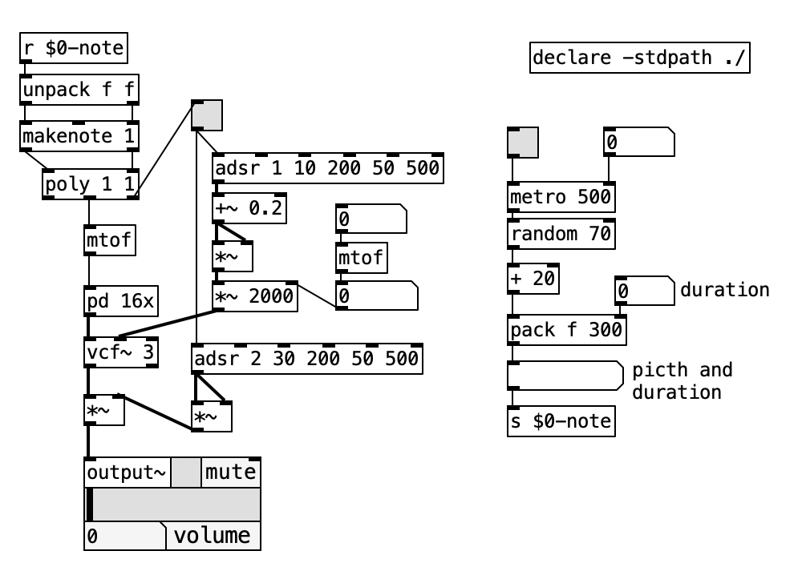
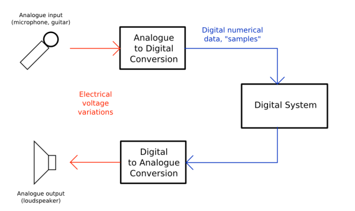
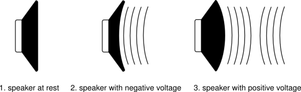
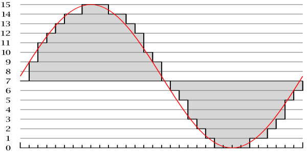
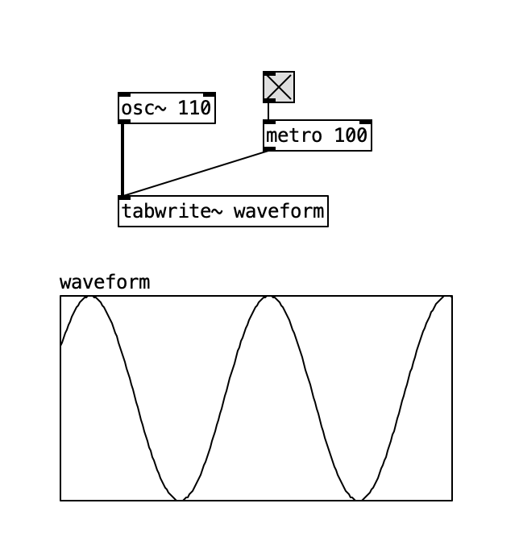
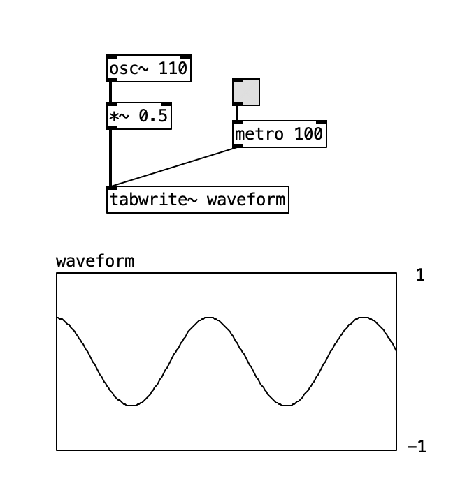

Chapter 7: Appendix III)
A Gentle Introduction to DSP,
Synthesis and Patching with Pd
By 'gentle introduction', we mean like 'for dummies' and newbies. It's also possible to read this section on its own, but the earlier contents of this manual offers a more in depth look and details on how Pd is structured and runs. This appendix, on the other hand, presents a quick overview and some basics of DSP (Digital Signal Processing), Synthesis Techniques and some patching examples cutting right to the chase.
7.1. Pure Data Introduction: a realtime graphical programming language.
Traditionally, computer programmers used text-based programming languages to write applications. The programmer would write lines of code into a file, and then run it afterwards to see the results. Many sound or visual artists, as well as other non-programmers, find this a difficult and non-intuitive method of creating things however.
This is where Pure Data comes in handy because it is a graphical programming environment. What this means is that the lines of code, which describe the functions of a program and how they interact, have been replaced with visual objects which can be manipulated on-screen. Users of Pure Data can create new programs (patches) by placing functions (objects) on the screen. They can change the way these objects behave by sending them messages and by connecting them together in different ways by drawing lines between them. The program is formed by connecting these boxes together into diagrams that both represent the flow of data while actually performing the operations mapped out in the diagram.

This visual metaphor borrows much from the history of 20th Century electronic music, where sounds were created and transformed by small electronic devices which were connected together via patch cables. The sounds produced by a patch are the result of the types of devices that are patched together.

just like a physical synthesizer, Pure Data works in "real time". This means that changes can be made in the program even as it is running, and the user can see or hear the results immediately. This makes it a powerful tool for artists who would like to make sound or video in a live performance situation. The program itself is always running, there is no separation between writing the program and running the program, and each action takes effect the moment it is completed.
The main thing to keep in mind when starting to learn Pure Data is that audio and everything else is just numbers inside the computer, and that often the computer doesn't care whether the numbers you are playing with represent sound or other data. This makes it possible to make incredible transformations in sound but it also allows for the possibility to make many mistakes, since there is no 'sanity checks' in Pure Data to make sure you are asking the program to do something that is possible.
So sometimes the connections you make in Pd may cause your computer to freeze or the application to crash. To protect against this save your work often and try not to let this bother you, because as you learn more and more about this language you will make fewer and fewer mistakes and eventually you will be able to program patches which are as stable and predictable as you want them to be.
The community of users and programmers around Pure Data have created additional functions (called "externals" or "external libraries") which are used for a wide variety of other purposes, such as video processing, the playback and streaming of MP3s or Quicktime video, the manipulation and display of 3-dimensional objects and the modeling of virtual physical objects. There is a wide range of external libraries available which give Pure Data additional features. Just about any kind of programming is feasible using Pure Data as long as there are externals libraries which provide the most basic units of functionality required. Nonetheless, this Gentle introduction will rely only on native objects, which is a limited set of objects for audio only.
7.2. Basic Digital Audio.
Unlike an analog synthesizer, Pure Data deals with digital audio and treats sound as digital numbers. In order to run Pd on your computer you need a sound card to convert analog audio input into digital and to convert digital sound to analogue on the output.

A microphone works by capturing vibrations in the air, which cause its membrane to vibrate. The microphone’s circuitry turns these acoustic vibrations into an electrical current. An analog to digital converter makes thousands of measurements of this electric current per second and records them as numbers. A loudspeaker works in reverse, it takes electrical current and moves the air in front of it and makes a sound.

The membrane of the speaker must vibrate from it's center position (at rest) backwards and forwards. The number of times per second it vibrates makes the frequency (the note, tone or pitch) of the sound you hear, and the distance amplitude it travels from it's resting point determines the gain (the volume or loudness) of the sound. Normally, we measure frequency in Hertz (Hz), which is a measurement of cycles per second, and the amplitude (loudness or gain) is measured in Decibels (dB).
7.2.1. Sample Rate and Bit Depth
When converting from analog to digital, we make measurements in time of the amplitude. That is to say we take a sample of the amplitude. For instance, an usual sampling rate is 44,100 measurements per second. That is the same as saying that there’s a sampling frequency of 44.1 kHz (kilohertz). Currently, sound cards can sample in frequencies up to 192 kHz. Other usual values are 48 and 96 kHz.
The sampled amplitude is the converted to a digital number. The resolution of the number is referred to as bit-depth or word length. Usual values are 16, 24, 32 and even 64-bit. One bit is a piece of information which is either 0 or 1, and if there are 16 bits together to make one sample then there are 2ˆ16 (or 2x2x2x2x2x2x2x2x2x2x2x2x2x2x2x2 = 65,536) possible values that each sample could have.
By increasing the sampling rate, we are able to record higher sonic frequencies, and by increasing the bit-depth or word length we are able to use a greater dynamic range (the difference between the quietest and the loudest sounds it is possible to record and play).

In Pd, audio signals can have either 32-bit or 64-bit floating point precision, depending on the version you have. Audio suited to be output and heard need to be within the -1 and 1 range (with 0 representing the speaker at rest in the middle position). Note, however, that it is possible to generate in Pd audio signal values can go outside of this range. As we’ll see later, such values are for controlling parameters, such as the frequency of an oscillator.
Being either 32 or 64 bit float means means that some of the bits are used to represent decimal values, not only for the range inside the -1 to 1 but for all possible numbers. Hence we do not have 2^32 possible values for audio signals in 32 bit float precision. And it’s tricky because 32 bit float provides more resolution to represent very tiny values than bigger decimal ones. But we can make a rough assessment of a more or less 24 bit resolution for audio output in Pd within the -1 to 1 range! Nonetheless, the final audio resolution depends on your sound card. If you have a cheap one that can only deal with 16 bits, then that's what you have. But anyway, even though many professional audio cards say they operate with 24 bit precision, it is a known fact they can't actually perform that task and this is already more than enough for any real world application anyway.
When we ask Pd to play back this sound, it will read the samples back and send them to the soundcard. The soundcard then converts these numbers to an electrical current which causes the loudspeaker to vibrate the air in front of it and make a sound we can hear.

The above patch plots the signal from an [osc~] object (a sine wave oscillator) into an array. We write the signal data into the array with the [tabwrite~] object, which plots every time it receives a bang. The bangs are sent from a [metro] object, which sends a bang every 100 ms.
7.2.2. Amplitude Control, Mixing and Clipping
If we want to change the volume of the sound, we have to multiply the numbers which represent the sound by another number. Multiplying them by a number greater than 1 will make the sound louder, and multiplying them by a number between 1 and zero will make the sound quieter. Multiplying them by zero will mute them - resulting in no sound at all. We can also mix two or more sounds by adding the stream of numbers which represent them together to get a new stream of sound.
However, if the range of numbers which represents the sound becomes greater than -1 to 1, any numbers outside of that range will be truncated (reduced to either -1 or 1) by the soundcard. The resulting sound will be clipped (distorted). The waveform from figure 7.2.4 is at full volume (i.e. it's peaks are at -1 and 1). The volume of the waveform below has been halved, so that it peaks at -0.5 and 0.5. The graph shows what would be heard from the soundcard: a clipped signal with the peaks of the sinewave removed

The waveform from figure 7.2.4 is at full volume (i.e. it's peaks are at -1 and 1). The volume of the waveform above has been halved, so that it peaks at -0.5 and 0.5. The graph shows what would be heard from the soundcard: a clipped signal with the peaks of the sinewave removed
7.2.3. Nyquist Frequency and Foldover/Aliasing
Another problem occurs if one tries to play back a frequency which is greater then half the sampling rate which the computer is using. If one is using a sampling rate of 44,100 Hz, the highest frequency one could theoretically play back without errors is 22,050 Hz. The reason being, a computer needs at least two samples to reproduce a single frequency. The number that represents half the sampling rate is called the Nyquist number.
If you were to tell Pd to play a frequency of 23,050 Hz, what you would hear is one tone at 23,050 Hz, and a second tone at 21,050 Hz. The difference between the Nyquist number (22,050 Hz) and the synthesized sound (23,050 Hz) is 1,000 Hz, which you would both add to and subtract from the Nyquist number to find the actual frequencies heard. So as one increased the frequency of the sound over the Nyquist number, you would hear one tone going up, and another coming down. This problem is referred to as foldover or aliasing.

7.2.4. DC Offset
DC offset is caused when a waveform doesn't cross the zero line, or has unequal amounts of signal in the positive and negative domains. This means that, in our model speaker, the membrane of the speaker does not return to its resting point during each cycle. This can affect the dynamic range of the sound. While DC offset can be useful for some kinds of synthesis, it is generally considered undesirable in an audio signal.

7.2.5. Block Size
Computers tend to process information in batches or chunks. In Pd, these are known as Blocks. One block represents the number of audio samples which Pd will compute before giving output. The default block size in Pd is 64, which means that every 64 samples Pd makes every calculation needed on the sound and, when all these calculations are finished, the patch will output sound.
You can change the block size for different subwindows in a patch and this is useful for FFT analysis, where you need a bigger block, and also if you want to perform feedback loops, in which case a single sample feedback is desired, so you need a block size of just one sample.
7.3. Sampler.
Sampler.
7.4. Basic DSP FX.
FX.
7.4.1. AM / Tremolo
AM.
7.4.2. Filters
Filters.
7.4.3. Delays
Reverb.
7.4.4. Reverb
Reverb.
7.5. Oscillators.
Oscillators are the basic signal generators in electronic music. There are different techniques to combine, filter or modulate them to create different rich sounds. As mentioned before, in Pure Data, audio signals are represented by a stream of numbers between the values of -1 and 1. Therefore, the output of oscillators send out values within this range.
In this section we’ll mention the most common oscillators, each with a different waveform (and different waveforms make different sounds). The waveform is the shape of one period of that oscillator. The main waveforms are: Sine, Sawtooth, Square, Triangle and Impulse.
Pure Data is very limited on oscillators, at least native/vanilla ones. You can get many oscillators from external libraries, such as the ELSE library., but Vanilla provides only a couple of oscillators: [osc~] and [tabosc4~]. The former is a sine wave oscillator and the latter a wavetable oscillator that we can use to create other waveforms.
Oscillators need to operate on a frequency range we can hear, and that is from about 20 Hz to 20 kHz if you’re young and you haven’t damaged your hearing yet with loud and noisy music. But you may also want oscillators to operate on a lower frequency than 20 Hz, like 1 Hz or 0.1 Hz, for control purposes. These are then called LFOs (Low Frequency Oscillators). In Pd you can turn any oscillator into a low frequency one just by setting the desired frequency.
7.5.1. Sine wave
The Sine Wave Oscillator makes a pure tone with no harmonics. The shape follows a sine function. Pd’s [osc~] is actually a cosine wave oscillator, which is the same as a sine wave but the phase is shifted at 90º, which means the start and end of the period is shifted at a quarter of the period.
A sine wave starts at 0 and goes up to 1 at the quarter of the period, then goes back at 0 at the half of the period, when it moves to the negative part and goes down to -1 at 3/4 of the period until it finally reached 0 back at the end of the period. A Cosine starts at 1, goes down to -1 and back.

The inner workings of the [osc~] object is not that it computes the sine or cosine function. Instead it uses a lookup table of 2048 points. In a sense, it is basically a wavetable oscillator just like [tabosc4~], but with a previously built and set cosine table.
You can also implement [osc~] with [phasor~] connected to a [cos~] object. The [phasor~] object generates a phase ramp from 0 to 1, so the phase is the position in the cycle and the ‘0’ and ‘1’ points are supposed to be the same, so we have circular/periodic phase cycles. The [cos~] object is also a table lookup that expects the index/position from values within the 0 to 1 range, and it uses the exact same table as the [osc~] object. By implementing a sinusoidal oscillator like this you have access to the phase and the advantage is that we can perform Phase Modulation, as we’ll see later.

Sine Wave Oscillator makes a pure tone with no harmonics. The shape follows a sine function. Pd’s [osc~] is actually a cosine wave oscillator, which is the same as a sine wave but the start and end of the period is shifted at 90º, which means a quarter of the period. A sine wave starts at 0 and goes up to 1
7.5.2. Sawtooth
Any waveform other than a sine wave is not a pure tone anymore and this means it is formed by a sum of pure tones and these other tones harmonics (which are multiple frequencies of the fundamental frequency). The Sawtooth waveform contains both odd and even harmonics of the fundamental frequency, and the sum or harmonics is actually “infinite” for a “perfect” Sawtooth waveform, which is a perfect ramp.
The problem with a digital waveform that includes an infinite sum of multiples of the fundamental frequency is that, at one point, you’ll reach the Nyquist Frequency limit and you’ll start to have folder and aliasing. Hence, for digital oscillators, you need “Band Limited” waveforms, which limits the frequency bandwidth below Nyquist and prevents aliasing, so they’re also called “Anti-Aliased Oscillators”.
A perfect Sawtooth waveform, nonetheless, might be useful as a control signal, that is, as a LFO! Let’s then design both types of waveforms, a non band limited for LFO purposes and a band limited to prevent aliasing. For both we’ll create tables for lookup, which is what is more efficient. Let’s then start with a non limited one. We need to create a table, populate it with the waveform and use [tabosc4~] as the oscillator.

As for a band limited version, we’ll define a fixed maximum number of harmonics so we don’t get foldover. This is not the best or more sophisticated strategy to design band limited oscillators, it’s just a more convenient strategy for Pure Data Vanilla. You can check Miller’s audio examples for more advanced techniques that include a transition table and oversampling plus filtering. You can also try externals that offer band limited oscillators that use different techniques such as the oscillators from the ELSE library, that uses Band-limited Impulse Trains (BLIT).
In order to define a maximum number of harmonics, we’ll use the ‘sinesum’ command that we can send to arrays. The way that sinesum works is that you send it a list of the amplitudes of the harmonics you wish to graph. A sawtooth wave is formed by a sum of harmonics whose amplitude decay as a factor of the harmonic number. The formula is 1/h (where "h" indicates the number of the harmonic) and it means the amplitude of the first harmonic is 1/1 = 1, the second is 1/2 = 0.5, the third is 1/3 = 0.33333, and so on.
The more harmonics you have, the more it looks like a non limited sawtooth wave. We just need to find a good amount of harmonics to choose to prevent aliasing, but of course this depends on the fundamental frequency, so we need to stipulate a maximum highest fundamental note.
The C6 pitch is somewhat in a very high range and we’ll consider this to be the limit. This pitch is about 1 Khz and then 20 harmonics is a save range for around that limit. Of course this depends on the sample rate and we’re considering a 44.1 kHz one, whose Nyquist frequency is 22.05 kHz. For this case, 20 harmonics above C6 is about 20.93 Khz, which is still fairly below Nyquist.
It is still save to go a bit over the C6 limit and even if you cross the line a little bit, you’ll only get the very top harmonics aliased, and these have a very low amplitude and you won’t get significant distortion until the amount of foldover is really high. That is to say you can take more risks if you will.
You can also choose a different amount with more harmonics if you want to remain on the lower musical range. Another option is to increase the sample rate so you can have more headroom for harmonics.
Let’s finally check the examples. Here is a message to compute a very rudimentary sawtooth wave using only four harmonics:

Because the graph is the product of several sine waves being added up, the waveform can go outside the normal -1 to 1 bounds of an audio signal. If we send a "normalize 1" message to the array, it adjusts the range of the signal to fit within the bounds of -1 and 1. Below, we have two examples of sawtooth waves, both normalized to the range of -1 to 1. As can be seen, the more harmonics used to calculate the waveform, the closer it gets to its idealized mathematical form:

We then use[tabosc4~] to load these waveforms from arrays.

7.5.3. Square
Square.
7.5.4. Triangle
Triangle.
7.5.3. Impulse
Impulse.This makes it ideal for filtering and for synthesizing string sounds. The shape of this wave ramps up sharply from "0" to "1", then immediately drops back to "0".
7.6. Controls.
It.
7.6.1. Metronome
Envelope.
7.6.2. Random
Envelope.
7.6.3. Envelope
Envelope.
7.6.4. LFO/
LFO.
7.6.5. LFO/
LFNoise.
7.6.6. Sequencers
Sequencers.
7.6.7. Sample & Hold
Sample & Hold.
7.6.8. MIDI Input
MIDI Input.
7.7. Building Monophonic and Polyphonic synths.
It's time to build us a simple monophonic and polyphonic synthesizers. A synthesizer is one of the most fundamental instruments in electronic music. Its essential function is to generate a musical tone when it receives a note from either a keyboard or a sequencer. A modular analog synthesizer is composed of several modules, or parts, which are connected together in order to build a synthesizer. You basically 3 types of modules: 1) Sound generators: such as an oscillator, a noise generator a sampler; 2)FXs and modifiers, such as a Filter, a Reverb or an amplifier; 3) Controllers, such as LFOs (Low Frequency Oscillators), Sequencers, Envelope Generators, etc.

The patch cables in a modular analog synthesizer transmit electrical voltage, which can be a sound signal but you can also have constant electrical voltage signals that are used to control the parameters of a module, aka “CV” (Control Voltage). For instance, a note sequencer sends electrical voltage that represents frequencies and these are fed into an oscillator.
Since analog synthesizer modules are controlled by voltage, we have terms such as “VCO” (Voltage Controlled Oscillator), “VCF” (Voltage Controlled Filter) and “VCA” (Voltage Controlled Amplifier) to refer to common modules. Digital synthesizers, on the other hand, are controlled by MIDI messages.
In Pure Data we can use control data numbers and sometimes also audio signals to control parameters of an object. For example, the [osc~] object is a sinusoidal object that can both control data and signals to set its frequency. When you connect a MIDI keyboard, you have control data, but if you’re using a signal, it’s like you’re using “CV”. Therefore, you can say it is also a “VCO”.
7.8. Basic Techniques.
It.
7.8.1. Additive
Additive.
7.8.2. Subtractive
Subtractive.
7.8.3. FM
FM.